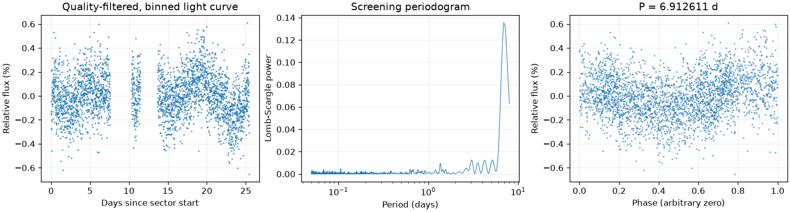
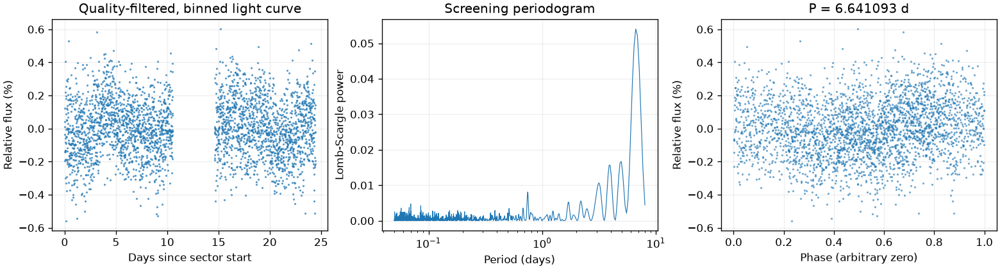
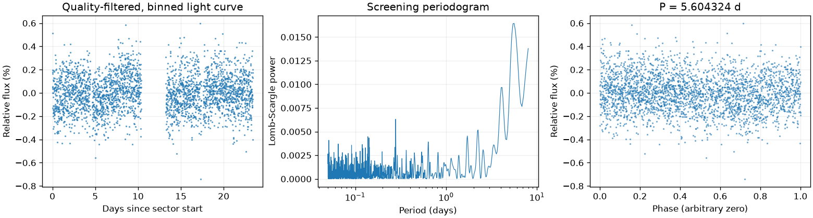

Sector 4 · 6.912611 天
相对幅度估计 0.2252% · 有效点数 14538

Screening peak only; no correlated-noise false-alarm calibration or physical classification.
这是筛选报告，未确认新发现，也不能代替 VSX 提交材料。
图中依次为亮度随时间变化、候选周期强度和折叠后的重复形状。相位零点仅供展示；纵轴是相对通量，不是标定星等。
相对幅度估计 0.2252% · 有效点数 14538

Screening peak only; no correlated-noise false-alarm calibration or physical classification.
相对幅度估计 0.1519% · 有效点数 14347

Screening peak only; no correlated-noise false-alarm calibration or physical classification.
相对幅度估计 0.1084% · 有效点数 14372

Screening peak only; no correlated-noise false-alarm calibration or physical classification.
{
"ra_deg": 94.2088855782463,
"dec_deg": -72.5052452080851,
"catalog_queries": [
{
"source": "VSX",
"checked_at": "2026-11-10T08:51:35.661187+00:00",
"url": "https://vsx.aavso.org/index.php",
"query": {
"params": {
"view": "api.list",
"ra": 94.2088855782463,
"dec": -72.5052452080851,
"radius": 0.04,
"format": "json"
}
},
"status": "completed",
"match_count": 2,
"note": "VSX neighborhood only; no-match is not novelty confirmation."
},
{
"source": "SIMBAD/VizieR/ADS",
"status": "not_run",
"note": "Requires detailed catalog/literature review; VSX alone is insufficient."
}
],
"vsx_neighbors": [
{
"Name": "Gaia DR3 5266063151139084032",
"RA2000": "94.07940",
"Declination2000": "-72.50758",
"ProperMotionRA": "1.5770",
"ProperMotionDec": "1.0100",
"VariabilityType": "SR|M",
"Period": "322.3",
"MaxMag": "15.96 G",
"MinMag": "16.27 G",
"SpectralType": "K",
"Discoverer": "Gaia collaboration",
"Category": "Variable",
"OID": "4460462",
"Constellation": "Men",
"sep_arcsec": 140.37551231843935
},
{
"Name": "Gaia DR3 5266063146839106176",
"RA2000": "94.12250",
"Declination2000": "-72.49752",
"ProperMotionRA": "1.3000",
"ProperMotionDec": "1.2170",
"VariabilityType": "RRAB",
"Period": "0.62577",
"MaxMag": "18.73 G",
"MinMag": "19.49 G",
"Discoverer": "Gaia collaboration",
"Category": "Variable",
"OID": "4461037",
"Constellation": "Men",
"sep_arcsec": 97.5567759172193
}
],
"notes": [],
"errors": [],
"repeatability": {
"status": "inconsistent",
"fractional_spread": 0.19699881907544145,
"tolerance": 0.05,
"note": "Heuristic screening comparison, not period-error or long-term phase-coherence validation."
},
"localization": null,
"submission": {
"name": null,
"ra_deg": null,
"dec_deg": null,
"coordinate_source": null,
"coordinate_epoch": null,
"variability_type": null,
"period_days": null,
"period_error_days": null,
"epoch": null,
"epoch_time_standard": null,
"epoch_event": null,
"max_magnitude": null,
"min_magnitude": null,
"passband": null,
"magnitude_source": null,
"mean_magnitude": null,
"amplitude_magnitude": null,
"amplitude_passband": null,
"discoverers": null,
"references": null
}
}